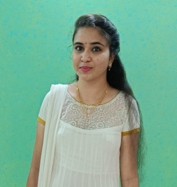

Pooja D

Professional Summary
Application Development Analyst with 5 years of experience in mainframe technologies including COBOL,JCL, IBM DB, and VSAM.
Skilled in handling production and non-production environments.
Currently expanding skill set in full-stack web development with a strong focus on modern web technologies.
Education
- Master's in Business Administration with 8.4% CGPA
- Bachelor's in Engineering with 8.6% CGPA
- 12th grade with score 8.6%
- 10th grade with score 8.2%
Work Experience
Application Development Analyst
Working in Accenture Chennai from 2020 to Present
- Delivered stable and scalable solutions on the mainframe platform
- Supported live applications and handled incident management
- Worked closely with stakeholders to meet business needs
Project Experience
UAT4 Environment Setup - Mainframe
- Created and maintained a new testing environment (UAT4)
- Managed both production and non-production tasks
- Led issue resolution, coordinated with teams, and maintained documentation through PPTs and Excel
Website creation using GitHub
Skills
- Mainframe: COBOL, JCL, IBM DB, VSAM
- Web Development (Learning): HTML, CSS, JavaScript
- Tools: Excel, PowerPoint
- Soft Skills: Problem-solving, Ownership, Communication
Awards
- Pinnacle Award(2022) - Accenture.
Other
Contact Me